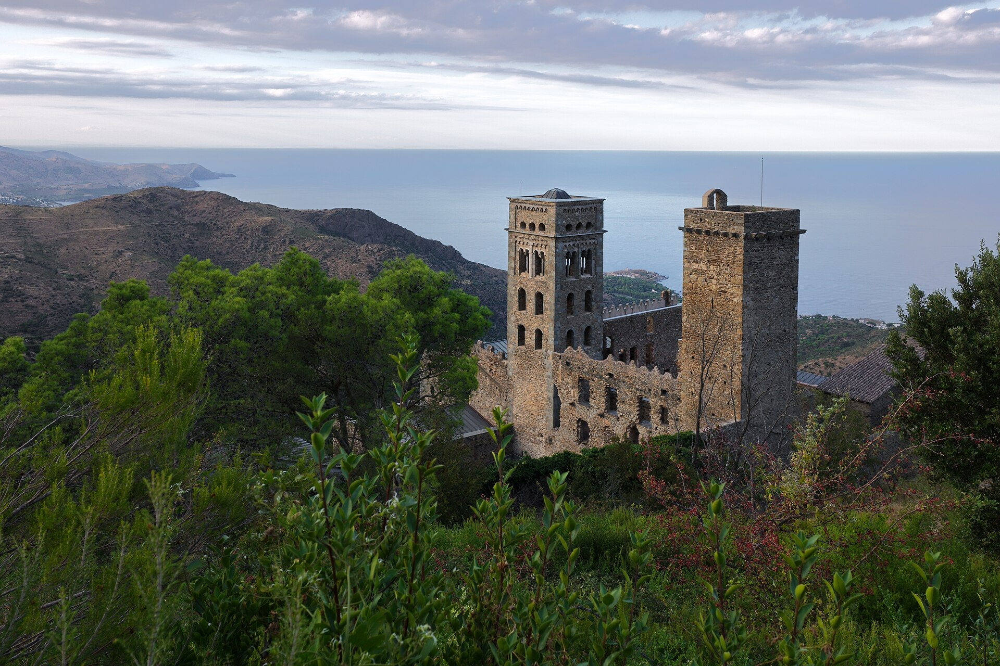
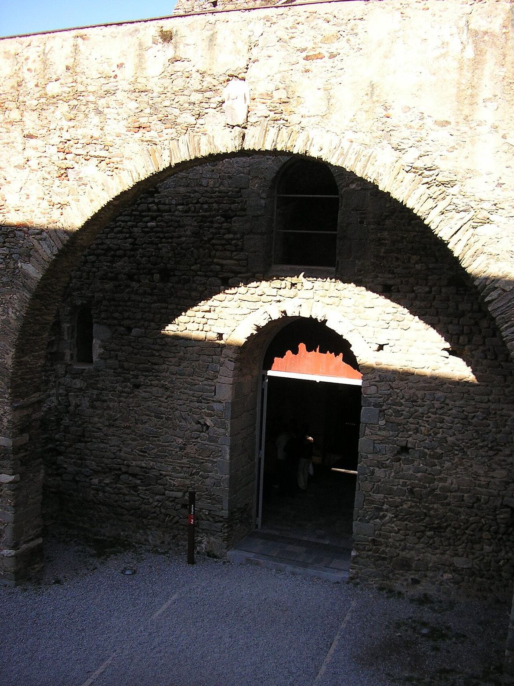
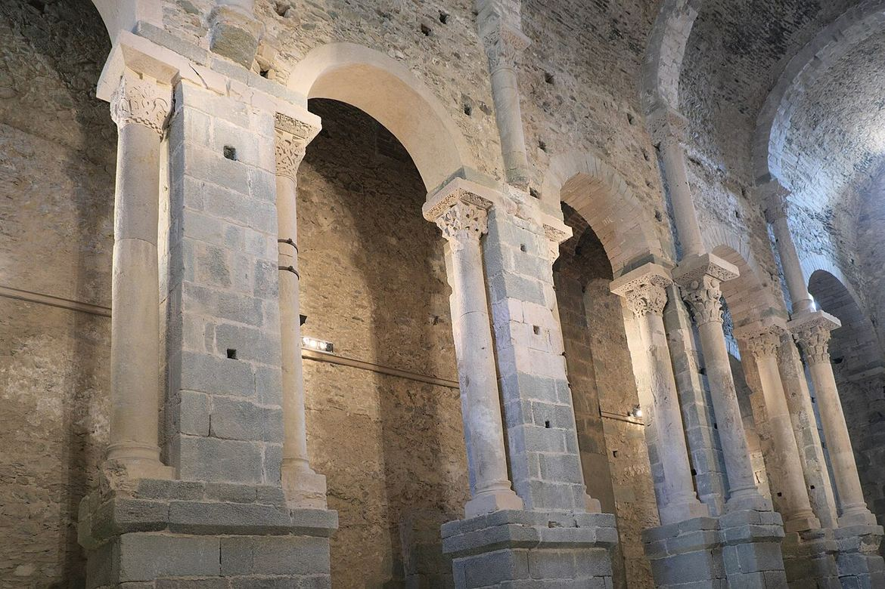
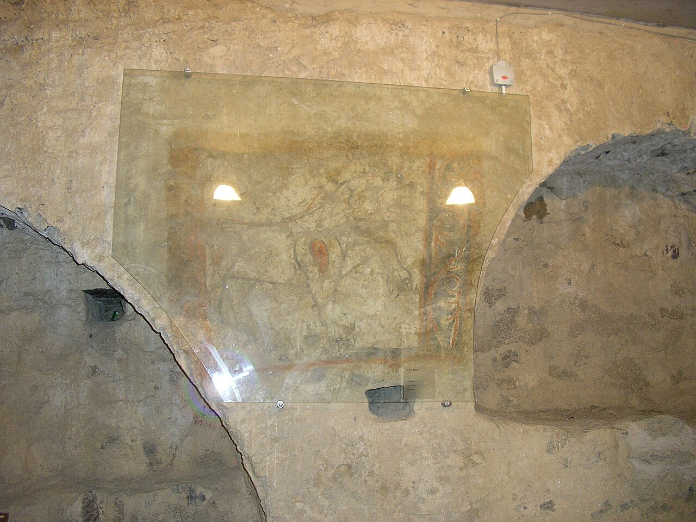
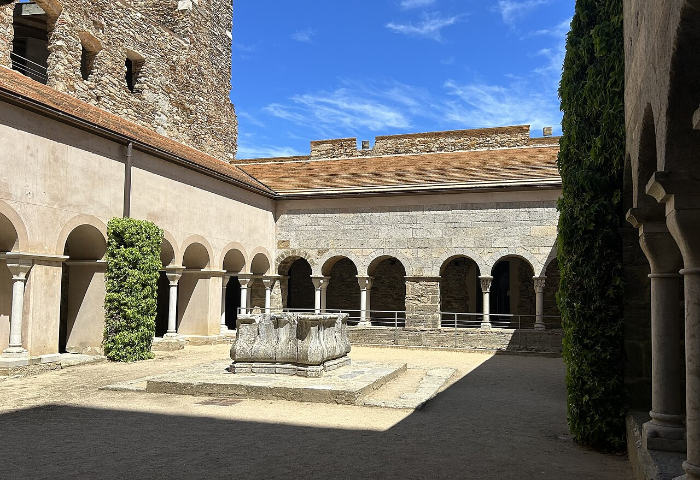
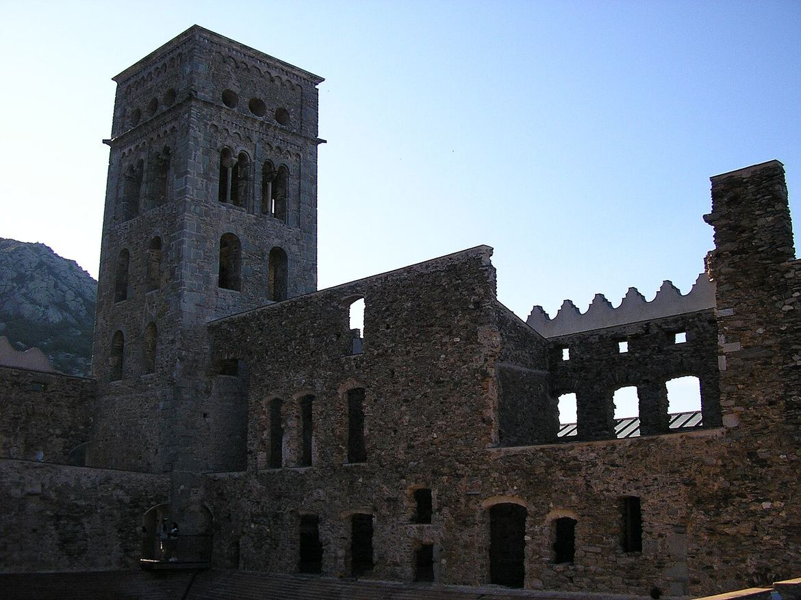
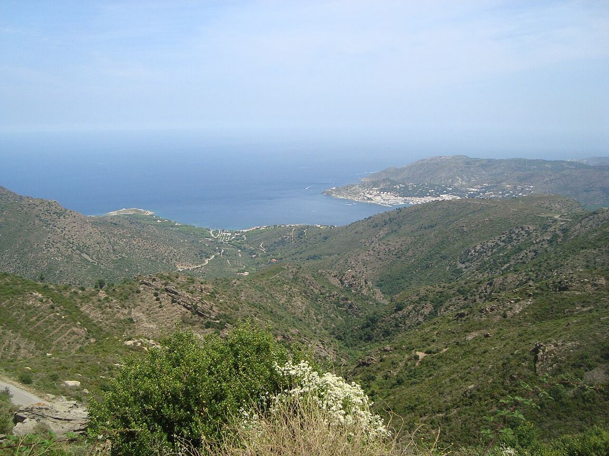
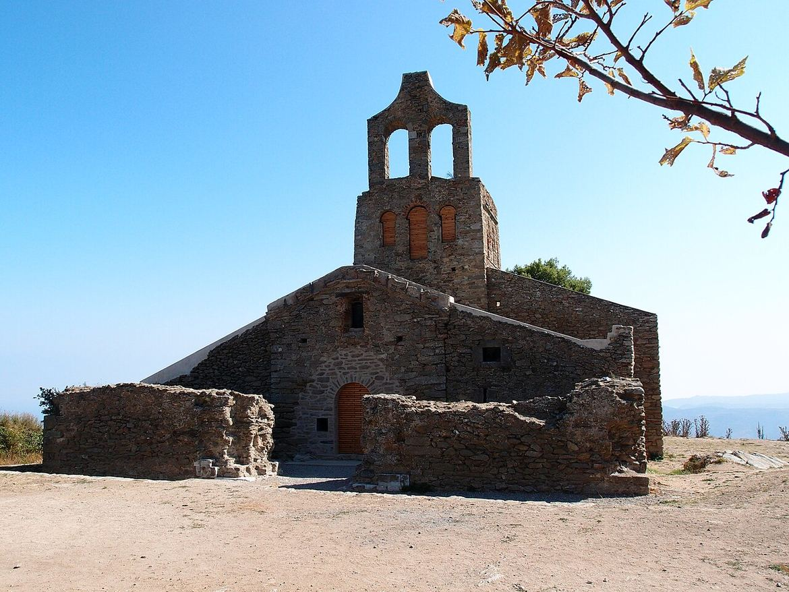

Nuestra guía para la primera parada. Un monasterio colgado a 520 metros sobre el mar.
Es una de las joyas del románico catalán, y está en uno de los lugares más bonitos de Cataluña. Desde arriba se ven a la vez la bahía de El Port de la Selva y el Cap de Creus.
Datos de la web oficial de Patrimoni (Generalitat de Catalunya), consultados en noviembre de 2026.
Abre con normalidad ese día. La taquilla y la entrada cierran 30 minutos antes, así que el último acceso es a las 17:00.
Por obras de restauración y mejora, la entrada general es gratuita de momento. No hay fecha de fin publicada.
Precio habitual: 7 € general, 5 € reducida (mayores de 65, estudiantes y otros).
Dirección: Camí del Monestir, s/n, 17489 El Port de la Selva.
La carretera sube con muchas curvas desde El Port de la Selva o desde Vilajuïga. El último tramo se hace a pie desde el aparcamiento.
Tiempo recomendado: 1 h a 1 h 15, lo que tenemos en el plan.
En el orden en que lo iremos encontrando. Así cabe todo en algo más de una hora.
El atrio de entrada a la iglesia, antiguo panteón de los condes de Empúries. Aquí estaba la portada de mármol del Maestro de Cabestany, el gran escultor del siglo XII. Fue expoliada a principios del siglo XIX y hoy se ven copias de sus relieves.

Al entrar, mirar hacia arriba. La bóveda de cañón alcanza 16 metros de altura. Las columnas se apoyan sobre zócalos muy altos y los capiteles imitan modelos romanos. Es una iglesia pensada para recordar a Roma, y no se parece a ninguna otra del románico.

El pasillo que rodea el altar por detrás era el camino de los peregrinos, para acercarse a las reliquias sin interrumpir a los monjes. Debajo está la cripta en forma de anillo, donde se guardaban. En la girola quedan restos de pintura con figuras con aureola.
Uno de los claustros más antiguos de Cataluña. Estuvo escondido y se descubrió en 1989. En la galería este se conservan pinturas originales: un león y una escena del Calvario.

El corazón del monasterio. Sus columnas y capiteles se saquearon tras el abandono y se reconstruyó en 1973 y 1997. Es el mejor sitio para sentarnos un momento en silencio.

Las dos torres que se ven desde lejos. El campanario, con decoración lombarda en el último piso, es la foto clásica del lugar. La torre de defensa no tenía puerta en la planta baja, para protegerse de piratas y bandidos.

Junto a la torre de defensa se abre la vista sobre la bahía de El Port de la Selva y el Cap de Creus. Aquí está el abrazo frente al mar que nos prometimos.

Cerca del aparcamiento quedan las ruinas del pueblo medieval de Santa Creu, que llegó a tener unos 250 habitantes. Su iglesia de Santa Helena se ve en pocos minutos, de camino al coche.

El conjunto tenía tres partes, como la sociedad medieval: el monasterio para los que rezan, el pueblo de Santa Creu para los que trabajan y el castillo de Verdera para los que luchan.
La arqueología ha encontrado aquí un gran edificio de época tardoantigua. No se sabe para qué servía.
Primera mención escrita: una pequeña celda monástica dedicada a san Pedro.
Se convierte en abadía independiente. Con el apoyo de los condes de Empúries crece hasta ser uno de los centros de poder más importantes de Cataluña.
Única fecha de consagración conocida. Probablemente solo de la cabecera. La iglesia se terminaría a lo largo del siglo XI.
Gran centro de peregrinación. Se celebraban jubileos cuando el 3 de mayo caía en viernes, hasta 1697.
Declive por guerras, epidemias, crisis y ataques de piratas y bandidos. Nunca vivieron aquí más de unos veinte monjes.
Los monjes abandonan el monasterio y se van a Vilassacra. En 1818 pasan a Figueres y en 1835 la comunidad desaparece con la desamortización. Siguen décadas de saqueo.
Declarado Monumento Histórico Artístico Nacional. Empiezan las restauraciones.
Gran campaña de excavación y restauración. Aparece el claustro inferior y un tesoro de 658 monedas de oro y plata, hoy en el MNAC de Barcelona.